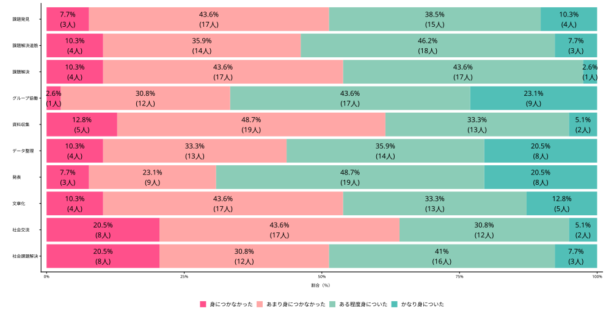
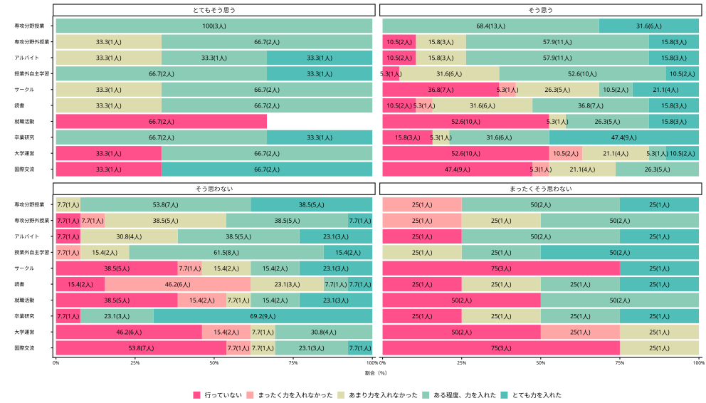

論点整理・コメント 探究学習と大学での学び
思想史から問い直す探究のあり方、高大接続のあり方
![]()
October 28, 2026
人の知的活動も畑と同じである。種をまき、長い時間をかけて手を入れれば、さまざまなものを育てることができる。だが、私たちがより好むのは、おのずから生まれたものである。

Ⅰ. 問題の所在
自己紹介
- 専門：政治思想史
- 18世紀イギリスの議会政治：レトリック受容と新興メディア
- 所属：高大接続コア・センター
センターでの企画・業務
- 高大接続リーディング・セミナー; 本で拓く探究ワークショップ; 高大接続ラウンドテーブル; 高大接続に関わる追跡調査 1
その他
- 前任校（公共政策系）において「PBL（問題解決型学習）」や初年次教育に長く携わる
探究をめぐる、私が経験したモヤモヤ
- あるワークショップでの高校の先生
- 「生徒が、私にも読めないような分厚い本をしっかり読んで探究学習に取り組んでいる。見方によっては本をまとめているだけに見えるが、簡単なことを行なっているようにはとても思えない。華々しい実験だけが評価されるのはおかしいのではないか」
- あるワークショップでの生徒
- 「大人が解決できないような問題を、高校生が解決できるわけないよね笑」
- ポスターセッションにおいて他校の生徒に質問する高校の先生
- 「先行研究がもうあるんじゃないの？」
問題の所在
- 高校と大学の埋めがたいギャップ
- 探究学習の文脈において、高大接続は案外、論じられない
- 探究学習の「研究」化（高橋 （2020））
- 2020年になされた指摘（警告）が依然、放置されている
- 探究で頑張った生徒は、大学でも頑張る、は検証を要する仮説（願望？）
- 探究学習の経験は大学でどう活きるのか（プレゼンテーション能力など、目に見えやすいアカデミック・スキルだけ？）
- 現場の高校の先生の声や実践が大学教員に届いていない（のでは？）
大学4年次3月時点での意識調査：探究活動で育成された資質・能力
- 令和4年（2022年）入学者対象（回答率：3.2％）

大学4年次3月時点での意識調査：探究学習に熱心に取り組みましたか？ × 大学生活の中で、どのくらい力を入れてきましたか

問題の所在 > 探究学習に着目した高大接続研究
- 木村 （2026）：「子どもの生活と学びに関する親子調査」などを分析
知見
- 高校探究 ↔︎ 大学での学びのエンゲージメント：関連小さい（β = .08）
- 高校探究 ↔︎ 大学での課題探究 ↔︎ 大学での学びのエンゲージメント
- 大学での課題探究を介した関連が示された
- 入試難易度・学問領域による違いはみられない
疑問
- 大学での課題探究：情報収集・分析、レポート作成等
- 大学での学びのエンゲージメント：「授業に主体的に参加」「授業は楽しい」等の合成指標
- 高校の探究経験の「何」が、大学での学びの「何」につながるのか？
問題の所在 > 高大接続の難しさ
学校と社会をつなぐ調査（通称：10年トランジション調査、河合塾）
- 学習や成長に対するマインドセットやキャリア意識は高校までに形成されており、大学で後から変えることは容易ではない
高校の先生方が「大学受験が一番大事」「いろいろ我慢しても、大学にとにかく入れ」「大学に入ったら好きなことをして」と言うことが駄目だという話を実証的に示すために、この調査〔「10年トランジション調査」〕を始めたわけです。たくさん我慢して大学生になっても、それまでにしてこなかったことは大学生になってもできない。大学でいろいろと育てようと思っても、学生自身にその意欲がないのです。そういうマインドセットは、高校までにしっかりと出来上がっていて、キャリア意識も大きいです。自分が成長しようと端から思っていない（溝上 （2023, p. 38））。
問題の所在 > 探究学習の「研究」化
学会発表，論文執筆，論文投稿，コンテスト入賞など，推薦入試で求められる探究学習の内容は，学習指導要領の内容を遥かに超える（高橋 （2020, p. 42））。
先端的な科学研究，学会発表や論文執筆は，本来大学教育で行う内容ではないかという疑問も残る。「探究」ではなく「研究」が行われるようになり，それを“獲得ポイント”として，大学に進学するという道筋は，自己の方向性を見つめ，社会との関わりを見出す発達段階にある高校生にとって果たして適切な教育なのだろうか（高橋 （2020, p. 42））。
多忙な中で，対応しきれないと「総合的な学習の時間」のように形式的な対応を取ったり，探究学習を“外注”したりする場合には，高校生の教育活動としての探究学習は後退していくであろう（高橋 （2020, p. 42））。1
Ⅱ. 論点
論点
探究学習は、高大接続の「切り札」になるのか？なるとすれば、どのような条件が必要か？
Q1. 探究学習に固有の良さはどこにあるのか
Q2. 高校の「探究」と大学の「研究」はどうすれば「接続」するのか
Q3. 高校教員と大学教員はどのようなコミュニケーションが必要か
サブクエッション. なぜ「探究学習」は「研究」化してしまうのか
- よく指摘される要因：特別入試
- 私見：「探究」の定義そのものが、研究をモデルにしているのではないか
「学びの転換」論
高校で学んできた事柄をいったんほどき、そのある部分を使いつつ、新たに継続したりしながら必要に合わせて再構築する(松下 （2010, p. 11）) 。
Ⅲ. 部屋の中の象：探究とは何か
部屋の中の象
- なぜパーティールームに象がいるのか？おかしいのに誰も問わない（問題が大きすぎると問えなくなる）の喩え
- そもそも探究とは何かが十分に問われていない
3類型
- 文部科学省「探究の学び」やそれを参照した定義
- 学術研究に準拠した定義
- 社会で必要とされる能力を意識した定義

既存の定義の類型 > 1. 文部科学省の「探究の学び」やそれを参照した定義
実社会・実生活との関わりの中で見いだす自己の興味・関心や問題意識に基づき課題を設定し、必要な知識や方略を活用し、試行錯誤しながら、課題解決を通じた新たな価値の創造を繰り返していく学習のプロセス（教育課程部会 生活、総合的な学習・探究の時間ワーキンググループ）。
特徴
- 起点に「興味・関心や問題意識に基づく素朴な問い」を置く
- 「好きや得意を伸ばし、夢や希望を育む」ための取り組みと位置づける
問題点
- 探究をプロセスで定義づけるため、To Doリスト化、形式化しやすい
- 注記がないと意味を特定しづらい
既存の定義の類型 > 2. 学術研究に準拠した定義
探究的学習とは、（a）自ら問題を発見して問いを立て課題を設定し、（b）調査・観察・実験などによって情報を収集して事実を明らかにし、（c）事実に基づいて、整理・分析、論理的・批判的思考・判断を行い、（d）導いた結論を表現したり，問題を解決し、検証したりする学習活動であり、学習者主体のアクティブラーニングの一形態である（楠見 （2025, p. 28））。
- 学術研究のプレ体験：研究の作法を学ぶ。生徒に新規性は求めない
- （暗黙の）発達モデル：調べ学習（小・中学生） → 探究学習（高校生） → 学術研究（大学生）
問題点
- 探究学習を学術研究に近づけようとする力学が働く
- 探究学習の固有性が見えなくなる
- 学術研究的な探究を実施するリソースが高校にはない（「探究公害」）
既存の定義の類型 > 2. 学術研究に準拠した定義
〔課題研究とは〕自分の進路や興味・関心を社会・学術の諸問題と関連させ、取り組む課題を見いだし、先人たちが行った研究の諸業績をふまえたうえで、適切な調査・実験方法を用いて、客観的な事実やデータを収集しつつ、自分自身の考察やアイデアなどで、新たな知見を創造、探究し、他者と共有することで、課題解決に貢献すること（岡本 （2021, p. 14））
既存の定義の類型 > 3. 社会で必要とされる能力を意識した定義
本質的には「大人が日々社会で生きていくためのベース」を訓練しているのだと考えています。私たちは社会に出て組織で働くようになると、社会課題を解決したり、誰かの不安や不満を解消したりすることをビジネスとして展開し、その対価として生活の糧を得るようになります。この一連の「課題解決のサイクル」は、今の社会構造のなかで生きていく以上、一生やり続けざるを得ないものです。」（リクルート進学総研「探究は自ら打席に立ちバットを振るトレーニング」）
問題点
- 学習者が起点になるのか怪しい
- 社会で今、何が問題かが起点に。生徒は「大人の期待」に応えようとするが、興味がなければ「やらされ探究」に陥る
- 文脈によって意味・適用範囲が自在に変わる伸縮自在な概念であるため、さまざまな活動を包摂できる一方、「探究」の固有性を問えない
中教審ワーキング（生活・総合）
- 次期学習指導要領（2030年から実施）の改定を目指して「質の高い探究」をどう実現するのかについて、定義や連携のあり方などが議論された（2025年10月から2026年8月）
委員として参加する酒井先生（立命館宇治中学校・高校）の感想
こうした議論〔ワーキング〕に参加しながら、「成果物ができたか」「発表がうまくいったか」だけでは測れない学びを、言葉にしようとしていることを感じています。とりわけ、学びの成果を成果物の完成度そのものではなく、問いを通して意味や価値に向かっていく学習のプロセスとして整理し直そうとする姿勢は、現場で感じられてきた違和感と深くつながっています。また、問いが変わること、仮説が外れることは、失敗ではなく学びの途中なのだというメッセージが、制度の言葉として表れ始めているようにも感じました（ 酒井 （2026, p. 143））。
デューイの「探究」論に立ち戻る
デューイと文部科学省の親和性
- 文部科学省：「自己の興味・関心や問題意識に基づき課題を設定」1
- C. S. パース、J. デューイ（プラグマティズム、伊藤 （2016））
- パース：疑い・不確かさが探究を引き起こす
- デューイ：問題状況の中で、何が問題なのかを明らかにしながら探究する
- 外から与えられた課題への回答ではなく、「気になる」「何かおかしい」という経験から探究は始まる
- 探究を人間の日常的な営みとして捉える
デューイの「探究」論に立ち戻る
デューイの定義
探究は生活のあらゆる領域に、そして各領域のあらゆる側面に浸透している。日常生活において、人間は物事を検証し、知的に考察し、推論し、判断する。それは、種を蒔き、収穫し、商品を生産し、交換するのと同じくらい「自然な」ことである（Dewey （2008a, p. 106））
探究とは、不確定な状況を、その構成要素の区別や関係において極めて確定的な状況へと、制御または誘導的に転換し、それによって元の状況の要素を統一された全体へと変容させることである（Dewey （2008a, p. 108））1
- 最初のモヤモヤが、自分にとって説明可能なものになっていく
デューイの「探究」論に立ち戻る
デューイの定義
「問題」と「解決」は、まったく同時に明らかになる。それまでは、私たちの問題の捉え方は、多かれ少なかれ曖昧で暫定的なものである。うまくいかなかった最初の考えをきっかけに、目の前の状況をあらためて見直す。すると、行動が妨げられていることへの戸惑いが、具体的な状況や対象に即して、少しずつ言葉になる。単に「溝がある」ことではなく、その幅や土手の滑りやすさが問題なのである。…こうして、困惑がどこから生じているのかが、より明確になる（Dewey （2008b, p. 201））。
省察的な活動が生じるあらゆる場面において、当初は状況全体に対する漠然とした感情にすぎなかったものが、知的に捉え直されていく。この転換は、何が困難を生じさせ、行動を止めているのか、その諸条件をより明確に捉えることによって生じる（Dewey （2008b, p. 202））。
デューイ的に再定義された探究の例示
- 児童の場合
- （探究学習ではない）先生が児童に「カブトムシはなぜ夜に活動するのか、調べてみよう」と問いかける
- （探究学習）児童本人が「去年は同じ時期、同じ場所でカブトムシが採れたのに、今年は採れなかった。なぜ？」と疑問を持ち、調べ始める
- 生徒（中高生）の場合
- （探究学習）近所の空き地に、ドラッグストアB店ができることになった。すでに近くにはドラッグストアA店がある。そこで生徒が、「なんでまたドラッグストアなんだろう？私はパン屋になってほしかったのに」とモヤモヤする。なぜB店がここに出店するのか？と調べ始める（社会問題を解決するための活動ではない）
- 高校の先生の場合
- 探究学習を大学の研究をモデルに捉えるのは、違うのではないか、と思い、有志で議論を始める
デューイ的に再定義された探究学習における先生と生徒の関係
- 「教える／教わる」から「互いに知っていること、わからないことを交換し、考え合う」関係へ
- 教員は教科科目とは異なり「知っている側」である必要はない
- 生徒が「この本に書いてあることが、どうしてこうなっているのか分からない」と言ったとき、教師が答えを教えるのではなく、「私もそこは分からない。ちょっと一緒に調べてみようか」、「調べて面白いことがわかったら教えて」と言える人間関係
- 教員も、生徒から耳学問させてもらう（教師が生徒から知識を得ることを恥じない）くらいの姿勢でよいのではないか
大学教員も、すべてのことを知って学生に対応しているわけではない。特に初年次教育（専門に分かれていない）においては、知らないことも多い（ラジオの未来を考えたい、プロバスケットボールを盛り上げたい、アフリカで日本の便器を売りたい）
探究学習と研究の相違点
| 探究 | 研究 | |
|---|---|---|
| 中心にあるもの | 自分の納得 | 他者の納得 |
| 問い | 自分は何を知りたいのか | 他者にとっても意味のある問いか |
| プロセス | 調べ、考え、問い直し、自分が納得できる理解をつくる | 調べ、考え、検証し、他者が納得・検討できる知見を得る |
| 他者への説明 | 「私はなぜこう考えるようになったのか」を伝える | 「なぜこの主張が妥当なのか」を示す |
Ⅳ. 盲人と象：探究学習の多様性
群盲象を評す
- 皆が同じものを見ているつもりで、実際には別々のものを論じていることの喩え
特定の「型」に押し込められやすい探究学習
- 探究学習は仮説を立て検証しなければならない
- 探究学習は調べるだけでなく、解決策を提案しなければならない

- 対象の特性や目的に応じて、多様な探究学習があり得る。それぞれに固有な性質を把握することが重要
「型」から外れた探究学習
- 文献調査が「調べ学習」と解されやすい1
- インタビュー調査や観察は「それで終わり？」という印象を持たれやすい
- 解決が困難な問い（自由とは何か）は「意見」であって探究ではないと解されやすい
探究学習の多様性とそれぞれの特徴を捉えるためのマトリックス 1 2
| 規則性の発見 | 固有性の記述 | |
|---|---|---|
| 対象となる現象の再現可能性が高い | 規則性の発見 理系：植物の成長に影響する条件 文系：SNS上の言葉が拡散する条件 |
個別の対象に固有のパターン 理系：ある植物の成長過程 文系：ある地域の人口変動 |
| 対象となる現象の再現可能性が低い | 少数事例から規則性を推論 理系的：地球史上の寒冷期・温暖期の周期性 文系的：現代日本の政権交代（3回） |
記述 理系的：ある火山の噴火過程 文系的：ある地域の水害 |
探究学習の多様性とそれぞれの特徴を捉えるためのマトリックス
それぞれのセルで用いられる代表的な方法
| 規則性の発見 | 固有性の記述 | |
|---|---|---|
| 対象となる現象の再現可能性が高い | 統制実験（条件を統制できる場合）、重回帰分析（条件を統制できない場合）、分散分析、相関分析、量的テキスト分析、叙事詩（人間類型） | 比較、記述統計、クロス集計、散布図、棒グラフ、時系列グラフ |
| 対象となる現象の再現可能性が低い | 比較事例研究、プロセス・トレーシング、複数資料の比較・パターン探索 | 文献調査、観察ノート、フィールドノート、厚い記述（文化人類学者C. ギアツ「事実だけでなく、コンテクストを含めた記述」）、資料読解、インタビュー、フィールドワーク、写真撮影、映像記録 |
探究学習のイメージ
探究の出発点 ⇒
- 「ドラッグストアがまたできた？なんで？」（文部科学省「素朴な問い」）
探究学習 ⇒
- なぜだろう？ → 調べてみる → 考えてみる → 「なるほど、そういうことか」→「でも、こっちはどうなんだろう？」→「自分なりの理解にたどり着く」1
探究学習の結果
- 自分の地域について知る; 自分の考えが変わる; 他者の立場がわかる; 自分が何を大切にしているかがわかる; 将来の目標（進路; 職種）が見つかる
探究学習：プロセスとアウトプット
- プロセス志向の探究学習における二つの異なる「問い」の混同
探究学習を始動、駆動させるための問い・疑問
- 「何が気になるのか」「なぜ気になるのか」
- この段階では問いの質を高めようとせず、まず探究をスタートさせてみる
- 手や足を動かす。スモールウィンを重視。問いが変わってもよい。「やってみて〔自分がやりたいことは〕「これじゃない」とわかるだけでも一歩前進」（長谷川 （2026, p. 36））
探究学習のアウトプットをまとめるためのリサーチ・クエッション
- 「この探究を通して、自分は何を明らかにしたのか？」
- 探究を通して、自分は何に納得できるようになったのか
- アウトプット全体を矛盾なく説明できる問い（言わば辻褄合わせ的問い）
Ⅴ. 自問する象：自己の変化を捉える振り返り
探究学習の振り返り
高校の探究学習
- （濃淡はあれ）振り返りシートなどを用いて、振り返る時間、機会を設けている
- Cf. 大学のゼミ、研究室活動において、どのような力が養われたかを言語化するような機会は一般にはない
「何を学んだか」から「どう考えが変わったか」へ
- 「知識が増えた」「調べ方がわかった」だけでは、経験を捉えきれない
- 探究を通して、自分の認識がどう変わったのか、この変化を、具体的な経験にもとづいて言葉にする
→ 振り返りの言語化を支援することも（こそ？）、教師の重要な役割では？（Cf. 木村 他 （2022））。深い振り返り、浅い振り返りを言語化できていない
振り返り例
よい振り返り
最初は、自分たちの学校で行っている探究活動について報告するだけなので、それほど難しいとは思っていなかった。しかし、実際に報告をまとめようとしてみると、他校にはない自校の特色は何か、生徒の事例として何を紹介するべきか、また、それをどのような言葉で表現するのかにかなり苦労した。これまで、商店街をテーマにした生徒がいると、教師目線では「商店街を調べた」という一言で済ませられると思っていた。だが、この経験を契機にあらためて振り返ってみると、生徒が何を見て、何に疑問を持ち、どのように考えたのかという行為自体、それほど単純ではないことに気づいた。この経験から、生徒の探究活動についても、教師が外から簡単に評価したり、分類したりするのではなく、まず生徒が何を見て、何に困り、何を面白いと思ったのかを理解する必要があると感じた。今後は、生徒の活動を評価する前に、彼らがどのような状況にいるのかを想像しながら助言したい。
振り返り例
悪い振り返り
今回、自校の探究活動の取り組みをまとめ、報告するという活動を通して、多角的な視点を身につけることができた。このプロセスにおいて、多くの同僚と議論を重ねたが、それによってコミュニケーション能力や課題解決能力の重要性を再認識した。今後は、今回の経験を生かして、生徒一人ひとりの主体性を尊重しながら、より効果的な探究活動を実践していきたい。教師自身も常に学び続ける姿勢を持ち、多様な視点を取り入れながら、生徒の成長を支援していきたい。
- 「正しい教育者」の言葉が書かれているが、それ以上でもそれ以下でもない
- だが、何を「多角的」に見るようになったのか、以前はどう見ていたのか、何がきっかけだったのか、まったくわからない
- 当たり前のことを再認識しただけ？
海外の事例
振り返りも形式化・形骸化しうる
- 不必要な宿題・業務が増えただけ（Scully et al. （2018））
成功事例：Wakimoto & Lewis （2014）
- 大学院生の多くが、自身の能力や専門家としての成長を振り返る上で学習ポートフォリオを有用と評価
- 成功を支えた仕組み
- 作成方法のガイド; 「モデル」ポートフォリオ; 評価ルーブリック; ピアレビューとフィードバック
インプリケーション
- 振り返りを「課す」だけでは不十分; 何を、どのように振り返るかを支援することが重要
参考文献
参考文献
Dewey, J. (2008a). The Later Works of John Dewey, Volume 12, 1925 - 1953: 1938, Logic: The Theory of Inquiry. Collected Works of John Dewey. Southern Illinois University Press.
Dewey, J. (2008b). The Later Works of John Dewey, Volume 8, 1925 - 1953: 1933, Essays and How We Think, Revised Edition. Collected Works of John Dewey. Southern Illinois University Press.
Mahoney, J., & Goertz, G. (2006). A Tale of Two Cultures: Contrasting Quantitative and Qualitative Research. Political Analysis, 14, 227–249.
Scully, D., O’Leary, M., & Brown, M. (2018). The Learning Portfolio in Higher Education: A Game of Snakes and Ladders. Dublin City University, Centre for Assessment Research, Policy & Practice in Education (CARPE) and National Institute for Digital Learning (NIDL).
Thompson, M., Pawson, C., & Evans, B. (2021). Navigating Entry into Higher Education: The Transition to Independent Learning and Living. Journal of Further and Higher Education, 45(10), 1398–1410. https://doi.org/10.1080/0309877x.2021.1933400
Wakimoto, D. K., & Lewis, R. E. (2014). Graduate Student Perceptions of Eportfolios: Uses for Reflection, Development, and Assessment. The Internet and Higher Education, 21, 53–58. https://doi.org/10.1016/j.iheduc.2014.01.002
伊藤 邦武（2016）．プラグマティズム入門 ちくま新書 筑摩書房
岡田 航平（2025）．なぜ当事者視点で高校と大学の関係性を描くことが必要なのか？ 京都大学大学院教育学研究科紀要，71, 113–126. https://repository.kulib.kyoto-u.ac.jp/items/830d229e-4359-4c87-8e3a-56de5a165d24
岡本 尚也（2021）．課題研究メソッド：よりよい探究活動のために 第2版 啓林館
苅谷 剛彦（2018）．「大学性悪説」による問題構築という〈問題〉：大学改革における言語技法の分析 佐藤 郁哉（編）50年目の「大学解体」 20年後の大学再生：高等教育政策をめぐる知の貧困を越えて 京都大学学術出版会
苅谷 千尋・田中 千晶・中野 正俊（2026）．高校在学中の「学びの転換」的経験が成長実感に与える影響：高大接続プログラムの取り組みと追跡調査 大学入試研究ジャーナル，36, 23–30. https://doi.org/10.57513/dncjournal.36.0_23
木村 竜也・寺西 望・伊藤 大輔（2022）．PBLに基づいた「総合的な探究の時間」における生徒の振り返りの検討 日本教育工学会研究報告集，2022(4), 134–141. https://doi.org/10.15077/jsetstudy.2022.4_134
木村 治生（2026）．データで見る高大接続の現状と課題 大学時報，75(427), 32–39. https://cir.nii.ac.jp/crid/1520307900777668864
楠見 孝（2025）．高校生の探究的学習スキルと批判的思考態度の向上：スーパーサイエンスハイスクールにおける3年間の縦断調査 教育心理学研究，73(1), 28–41. https://doi.org/10.5926/jjep.73.28
酒井 淳平（2026）．誤解だらけの探究学習：「手応えがない」ときの25のヒント 明治図書
高橋 亜希子（2020）．新高校学習指導要領と探究学習 : 難関大学への別ルートになりつつある探究学習 アカデミア. 人文・自然科学編，19, 31–43. https://doi.org/10.15119/00002855
戸田山 和久（2022）．最新版 論文の教室：レポートから卒論まで NHK出版
西岡 加名恵・大貫 守（2020）．スーパーサイエンスハイスクール8校の連携による「標準ルーブリック」開発の試み 教育方法の探究，23, 1–12. https://doi.org/10.14989/250860
日本学術会議 心理学・教育学委員会高大接続を考える分科会（2023）．【報告】 日本における高大接続の課題：「セグメント化」している現状を踏まえて 日本学術会議
長谷川 まゆ帆（2026）．歴史学の手引き 東京大学出版会
本田 由紀（2022）．高校の探究学習のテーマ設定場面における指導はいかに行われているか：会話データの分析 教育社会学研究，111, 5–24. https://doi.org/10.11151/eds.111.5
松下 佳代（2010）．大学における「学びの転換」とは：unlearn概念による検討 東北大学高等教育開発推進センター（編）大学における「学びの転換」と学士課程教育の将来（pp. 5–15） 東北大学出版会
溝上 慎一（2023）．トランジション実現のための影響の大きな高校・大学での学びを理論的、実証的に示す 2020年代を通じて実現すべき高大連携：生徒・学生が『持続可能な社会の創り手』 となるために 京都高大連携研究協議会
溝上 慎一（2026）．課題の設定から始める総合的な探究：己の在り方生き方を育てる理論と実践 学びと成長の講話シリーズ 東信堂
文部科学省（2023）．今、求められる力を高める総合的な探究の時間の展開：未来社会を切り拓く確かな資質・能力の育成に向けた探究の充実とカリキュラム・マネジメントの実現 文部科学省